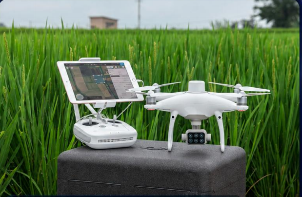
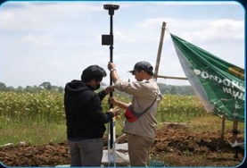
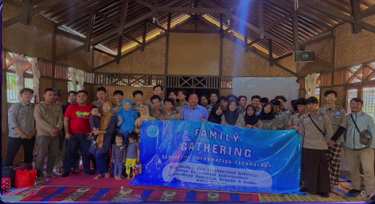
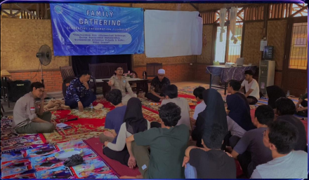
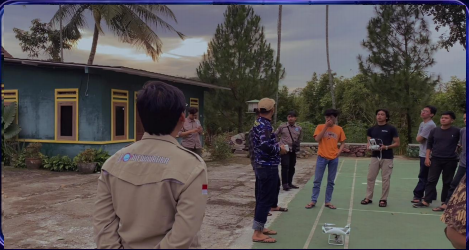
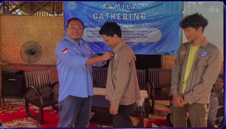

Geospatial
GISMemahami koordinat, layer, dan relasi antar lokasi.
Baca & susun peta ↗Beranda / Laboratorium / GIT
LAB EKSPLORASI GEOSPASIAL
(Geospatial Information Technology)
- UIKA Bogor.
Baca pola di balik lokasi. Jelajahi bumi lewat data, bangun solusi yang berarti bagi kehidupan.
APA ITU GIT?
Integrasi teknologi informasi, data geospasial, remote sensing, programming, dan kecerdasan buatan (GeoAI) untuk menghasilkan solusi berbasis lokasi.
DRONE → AREA SCAN
Drone dari perjalanan awal kini membaca terrain. Citra permukaan menjadi bahan untuk pemetaan, analisis spasial, dan eksplorasi GeoAI.
Drone & remote sensing merekam informasi permukaan bumi.
Data diolah menjadi layer spasial untuk membaca pola lokasi.
Model AI membantu menerjemahkan pola menjadi wawasan.
KOMPETENSI YANG SALING TERHUBUNG
Belajar tidak berhenti pada membuat peta. Hubungkan fondasi spasial, kode, data, dan AI hingga menjadi aplikasi.
Memahami koordinat, layer, dan relasi antar lokasi.
Baca & susun peta ↗Mengotomasi pengolahan dan membangun logika spasial.
Olah data lewat kode ↗Menyimpan, mengelola, dan menelusuri data berbasis lokasi.
Kelola informasi spasial ↗Mengenali pola dari citra dan kumpulan data geospasial.
Eksplorasi model GeoAI ↗Menyajikan analisis menjadi pengalaman yang bisa digunakan.
Bangun solusi interaktif ↗APA YANG DIPELAJARI
Sistem Informasi Geografis + Praktikum
Pemodelan Spasial + Praktikum, Penginderaan Jauh + Praktikum
Pemrograman Spasial + Praktikum, Proyek Perangkat Lunak Bidang Keilmuan GIT
Geospatial Artificial Intelligence + Praktikum
TERHUBUNG, BUKAN BERDIRI SENDIRI
GIT terintegrasi dengan 4 lab lain: SE, CSN, KERIS, dan Multimedia. Perspektif lintas bidang membuka ruang untuk menciptakan inovasi bersama.
Menghubungkan data spasial, sistem, dan visualisasi untuk memahami kota. Konsep kolaborasi, bukan klaim proyek selesai.
SKEMA INTEGRASI ANTAR LAB • KONSEPTUAL
KARIER & PROSPEK KERJA
Kemampuan geospasial bisa dibawa ke banyak bidang, dari layanan publik hingga pengambilan keputusan di dunia usaha.
BIG, BPN/ATR, PUPR, KLHK, BNPB, Bappeda
KORPORASIPertambanganAgrikulturPropertiLogistikTelekomunikasiSmart City
Contoh sektor dan arah karier, bukan daftar kemitraan resmi atau jaminan penempatan kerja.
TIM LABORATORIUM
Enam pembimbing dengan keahlian yang saling melengkapi, dari pemodelan spasial hingga sistem informasi geospasial.

Pemodelan Spasial Dinamik

Aplikasi Penginderaan Jauh

Pemrograman Spasial

Pemrograman Spasial
Perancangan Sistem Informasi Geospasial

Perancangan Sistem Informasi Geospasial
KELUAR DARI LAB, MEMBACA LAPANGAN
Dari persiapan alat hingga akuisisi data, praktik lapangan mempertemukan pengetahuan di kelas dengan kondisi nyata.

Mahasiswa mengoperasikan drone DJI Phantom 4 Pro dan Phantom 4 Multispectral dengan D-RTK 2 Mobile Station untuk pemetaan presisi tinggi, dari persiapan penerbangan hingga pengolahan data.

Pengambilan data persawahan dengan drone di Kecamatan Leuwiliang, Kabupaten Bogor. Titik kontrol RTK dipasang untuk akurasi posisi tinggi.
◉ Leuwiliang, Kabupaten Bogor
KEHIDUPAN DI LAB GIT
Mahasiswa belajar secara sungguh-sungguh melalui proyek dan berkolaborasi dalam berbagai kegiatan bersama.

KEBERSAMAAN GIT
FAMILY GATHERING
PRAKTIK LAPANGAN
APRESIASILANGKAH BERIKUTNYA / PETAKAN SPASIALMU
Belajar, berkolaborasi, dan eksplorasi solusi berbasis lokasi bersama Lab GIT.